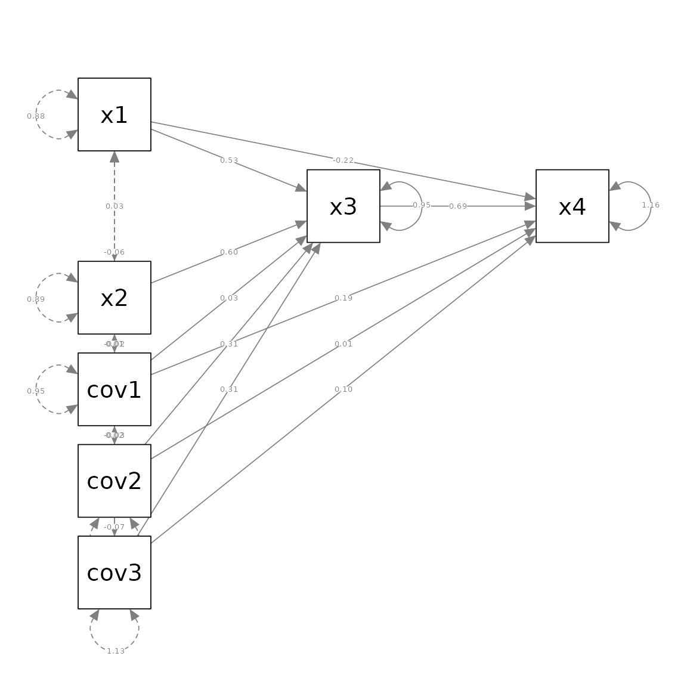
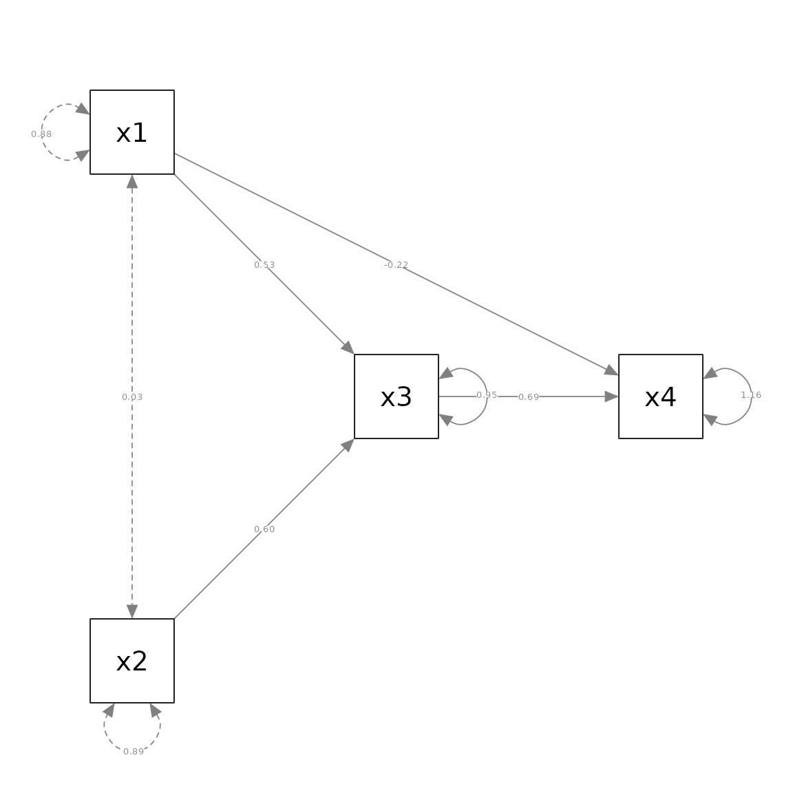

Keep or Drop Selected Variables
Shu Fai Cheung & Mark Hok Chio Lai
2023-10-13
Source:vignettes/keep_or_drop_nodes.Rmd
keep_or_drop_nodes.RmdIntroduction
In psychological research, it is common for a path analytic model to have several control variables. They need to be included in the analysis. However, for generating the plot, it is acceptable to omit them as long as results regarding these control variables are reported in other forms (e.g., a table of all parameter estimates), and keep only the main variables in the plot.
Two helper functions, drop_nodes and
keep_nodes, were developed for this purpose. When an SEM
output object, such as the output from lavaan, is passed to
semPlot::semPaths, it is first processed by
semPlot::semPlotModel. In other words,
semPlot::semPaths itself does not interpret the SEM output.
It actually use the output of semPlot::semPlotModel to
generate the plot. These helper functions modify the output of
semPlot::semPlotModel to be used by
semPlot::semPaths.
Example
Suppose we have a model with four main variables, x1,
x2, x3, and x4, and three control
variables, cov1, cov2, and cov3.
The sample data, pa_example_3covs, is in the package
semptools.
This is the analysis in lavaan:
library(lavaan)
#> This is lavaan 0.6-16
#> lavaan is FREE software! Please report any bugs.
mod <-
'x3 ~ x1 + x2 + cov1 + cov2 + cov3
x4 ~ x1 + x3 + cov1 + cov2 + cov3
'
fit <- lavaan::sem(mod, pa_example_3covs)We can plot the full model using semPlot::semPaths and
use layout and layout_matrix to control the
positions of all seven variables (please refer to the vignette on
layou_matrix on how to do this):
library(semPlot)
library(semptools)
m <- layout_matrix(x1 = c(1, 1),
x2 = c(3, 1),
x3 = c(2, 2),
x4 = c(2, 3),
cov1 = c(4, 1),
cov2 = c(5, 1),
cov3 = c(6, 1))
p_pa <- semPaths(fit, whatLabels = "est",
sizeMan = 10,
edge.label.cex = .5,
style = "ram",
nCharNodes = 0, nCharEdges = 0,
layout = m)
Suppose we want to remove cov1, cov2, and
cov3. We do this by calling
semPlot::semPlotModel directly, and modify it by
keep_nodes or drop_nodes.
We can drop cov1, cov2, and
cov3 by drop_nodes:
pm_no_covs <- semptools::drop_nodes(
object = semPlotModel(fit),
nodes = c("cov1", "cov2", "cov3"))The first argument, object, should be the output of
semPlot::semPlotModel. In the example,
semPlotModel(fit) is used to call
semPlot::semPlotModel to process fit and then
pass the results immediately to drop_nodes.
The second argument, nodes, is a character vector with
the names of the variables to be dropped.
With just two arguments, the argument names can be omitted:
pm_no_covs <- semptools::drop_nodes(
semPlotModel(fit),
c("cov1", "cov2", "cov3"))We can then use semPlot::semPaths to plot this modified
model:
m_no_covs <- layout_matrix(x1 = c(1, 1),
x2 = c(3, 1),
x3 = c(2, 2),
x4 = c(2, 3))
pa_no_covs <- semPaths(pm_no_covs, whatLabels = "est",
sizeMan = 10,
edge.label.cex = .5,
style = "ram",
nCharNodes = 0, nCharEdges = 0,
layout = m_no_covs)
Note that in the call to semPlot::semPaths, the modified
output of semPlot::semPlotModel, pm_no_covs,
is used instead of fit, the output of
lavaan.
Alternatively, we can also specify the variables to keep
using keep_nodes. It is used in a similar way, except that
the variables specified in nodes will be kept, and all
variables not specified will be removed.
pm_only_xs <- semptools::keep_nodes(
semPlotModel(fit),
c("x1", "x2", "x3", "x4"))
pa_only_xs <- semPaths(pm_only_xs, whatLabels = "est",
sizeMan = 10,
edge.label.cex = .5,
style = "ram",
nCharNodes = 0, nCharEdges = 0,
layout = m_no_covs)
This plot is identical to the previous plot.
The plot generated by semPlot::semPaths with selected
nodes dropped or kept can then be passed to other semptools
functions for further processing.
Keep Or Drop? It Depends
Which function to use depends on which one is easier to specify. For
example, if there are a lot of contorl variables but only a few main
variables, then it is more efficient to use keep_nodes and
specify the few main variables. If the number of control variables is
substantially less than the number of main variables, then it is more
efficient to use drop_nodes and specify only the few
control variables to drop.